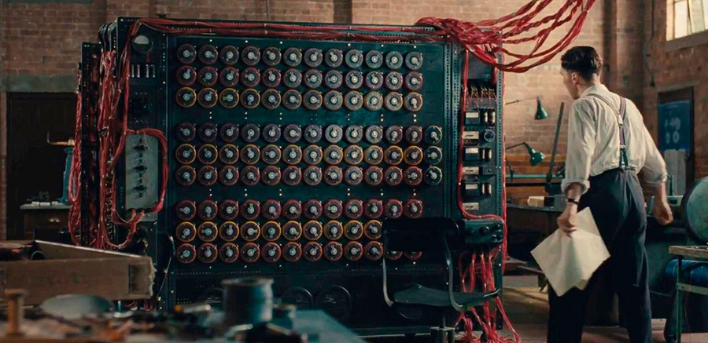
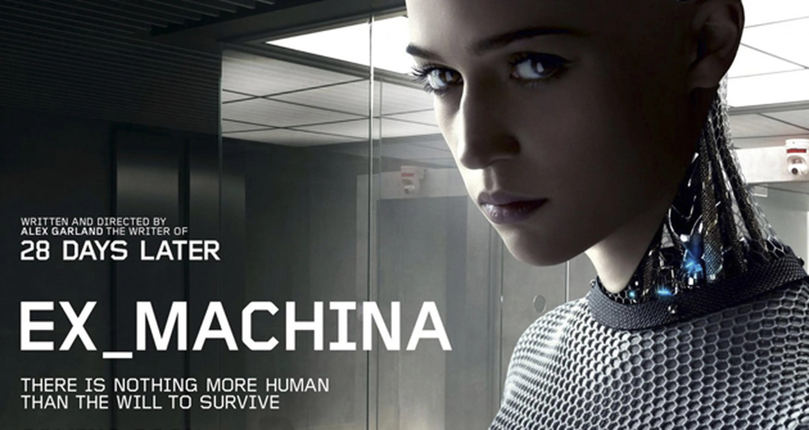

Esse filme nos apresenta um acontecimento real ocorrido durante o período da segunda guerra mundial, onde os nazistas elaboraram uma máquina capaz de decodificar todas as suas comunicações, logo então isso os fazem ficar sempre um passo à frente de seus inimigos. Essa máquina denominada Enigma estava conduzindo os alemães à vitória por simplesmente nenhum de seus inimigos conseguirem prever seus próximos ataques.
Menu
Gerais
O Jogo da Imitação
(CONTÉM SPOILERS)
"O Jogo da Imitação" nos mostra a vida do britânico conhecido também como "Pai da computação". O filme nos mostra as principais dificuldades e desafios enfrentados por Alan Turing desde sua primeira concepção sobre "computadores", sendo fortemente questionado na época.
Por Isaque G. S. Brandão | 09/05/2024
Apresentação
Início
Com a Enigma conduzindo as potências Aliadas à derrota, o governo britânico decidiu que precisava obter um meio de quebrar essas codificações “Indecifráveis” que os nazistas haviam criado, com isso o governo elaborou um programa secreto onde havia uma equipe com um único propósito: Decifrar o indecifrável. Para isso foram escolhidos os melhores criptógrafos, matemáticos, engenheiros e etc para formarem uma equipe e lidarem com essa missão.
Trailer do filme
"O Jogo da Imitação"
Desenvolvimento
Entre os envolvidos no programa estava Alan Turing, na qual possuía entre suas habilidades, a matemática, criptoanálise e ciências da computação, Alan foi quem liderou a equipe do programa secreto em Bletchley Park. Todos os pesquisadores da época viam como solução, a decodificação dos códigos nazistas por tentativas, ou seja, todos os dias eram testadas várias combinações e possibilidades diferentes até se chegar a um resultado. O problema desta solução é que isso era um processo longo e um desperdício de tempo valioso, a qual os aliados estavam perdendo.
O que mudou o curso da história foi a maneira como Alan resolveu solucionar o problema, enquanto uns colocavam homens contra a máquina, Alan considerava que para vencer uma máquina, é necessário enfrentá-la com outra máquina. A partir desse ponto é que surgiu a sua ideia de criar uma máquina que “quebrasse” a Enigma. Após 2 anos de trabalho sob pressão do governo, além da desconfiança sobre a eficiência de sua máquina, Alan passou a ter resultados graduais com sua máquina recém-criada, com isso o sucesso de seu trabalho foi mantido em segredo para que não houvesse mais complicações vindos da Enigma.

Fonte: Netflix
O jogo da imitação é um filme onde nos mostra a importância e o impacto sobre o que uma boa e má comunicação pode causar, porém o que podemos notar no filme é que além da comunicação, mostra também a falta de confidencialidade nas comunicações das potências aliadas, fazendo com que suas estratégias fossem facilmente previstas pelo inimigo, pelo simples fato de suas transmissões não possuírem nenhum tipo de segurança na qual impedissem que suas mensagens fossem capturadas. Por outro lado temos o “Pai da computação” Alan Turing, que foi o principal responsável por contribuir para decifrar a indecifrável Enigma.

No filme a partir do momento que ele apresenta a ideia que poderia construir uma máquina que pudesse decifrar todos os códigos da enigma, claramente não foi aceita pela maioria dos envolvidos por se tratar de algo “muito avançado” pra época, e que seria impossível criar tal coisa. Foi desse ponto que Turing começou a enfrentar as dificuldades que foram surgindo, deixando sua trajetória mais difícil, tendo o seu projeto quase desligado devido aos altos custos, sendo acusado de ser um espião soviético, e até mesmo ter sua vida inteira vasculhada devido ao seu segredo de ser homossexual, algo que era absurdo e considerado crime na época, podendo então colocar toda sua carreira em risco.
Conclusão
Mesmo com todas essas dificuldades Alan Turing se mostrou perseverante e insistente em seu projeto, não desistindo dele em nenhum momento, graças aos seus esforços ele e sua equipe conseguiram mudar o rumo da guerra e entregar a vitória nas mãos dos aliados, salvando milhares de vidas prevendo ataques alemães graças a grande invenção de Turing.
Veja também
Sobre "Deep Web: O Show da Morte"
Um grupo de hackers é atraído para um jogo mortal na dark web, onde a única saída é sobreviver a desafios letais impostos por um sádico anfitrião.

Análise de "Ex Machina"
Um jovem programador é convidado a avaliar a inteligência artificial de um androide enigmático, desencadeando uma série de eventos que desafiam a ética e a natureza da consciência.
Análise geral sobre "A Rede Social"
Um jovem programador é convidado a avaliar a inteligência artificial de um androide enigmático, desencadeando uma série de eventos que desafiam a ética e a natureza da consciência.